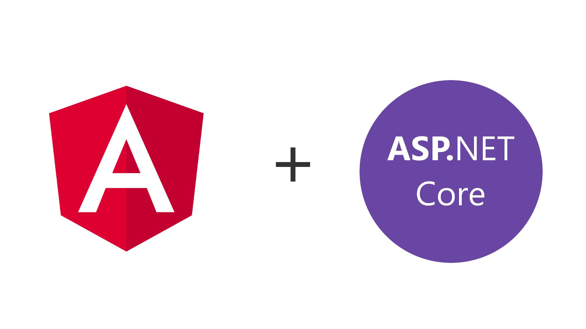

Welcome to {{ title }}!

This is a sample project to demonstrate a SPA developed in Angular 7 and ASP.NET Core 2.1 Web API. Here are some links to help you start with
-
To know about Angular 7, please visit here
-
To know about ASP.NET Core 2.1 Web API, please visit here
This sample will use following commands
- ng build - To build the angular content
- ng build --prod - To build in Production mode
The CI build will contain
- NPM Task - Install the angular CLI
- NPM Task - Install the node modules for the project
- Command Line Task - Build the Angular App
- .NET Core Tool Installer - Install the .NET CLI
- Command Line Task - Publish the Web API
- Azure App Service Manage - Stop the app deployed in Azure
- Azure App Service Deploy - Deploy the app to Azure
- Azure App Service Manage - Start the app deployed in Azure